1. Preparación del entorno
Preparación del equipo para poder administrar AWS desde la línea de comandos y comprobación de la identidad con la que estamos trabajando.
Instalación de AWS CLI
AWS01 · PREPARACIÓN DEL ENTORNO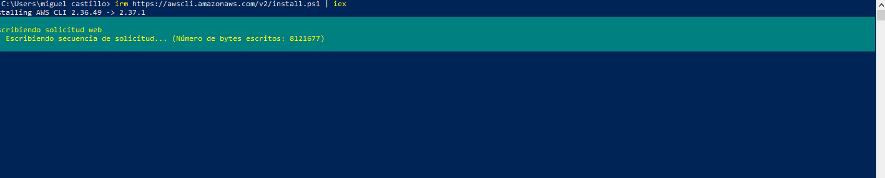
Captura 1 · Inicio del proceso de instalación de AWS CLI desde PowerShell.
Se prepara el entorno instalando AWS Command Line Interface (AWS CLI). Esta herramienta permite administrar servicios y recursos de Amazon Web Services directamente mediante comandos desde una terminal.
En Windows el proceso se inicia desde PowerShell, descargando y ejecutando el instalador de AWS CLI v2.
Finalización de la instalación
AWS02 · AWS CLI INSTALLED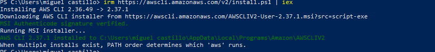
Captura 2 · Finalización correcta de la instalación de AWS CLI.
El instalador descarga el paquete necesario, verifica la firma digital y completa la instalación de AWS CLI en Windows.
Una vez finalizado este proceso, el sistema dispone de la herramienta necesaria para ejecutar comandos contra los servicios de AWS.
Comprobación de la versión
AWS03 · AWS CLI VERSION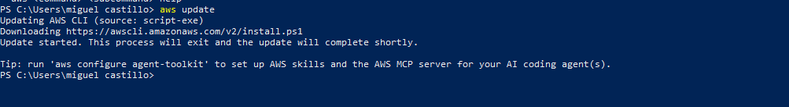
Captura 3 · Comprobación de la versión de AWS CLI instalada.
Se verifica que AWS CLI está correctamente instalado ejecutando el comando de versión.
Si el sistema devuelve información de la versión de AWS CLI, significa que la herramienta está disponible desde la terminal y puede utilizarse para continuar con la práctica.
Verificación de identidad AWS
AWS04 · STS GET-CALLER-IDENTITYCaptura 4 · Ejecución del comando aws sts get-caller-identity.
Este comando consulta el servicio AWS Security Token Service (STS) para comprobar qué identidad está utilizando actualmente AWS CLI.
La respuesta permite identificar la cuenta y la identidad asociada a las credenciales activas. Es una comprobación muy útil antes de comenzar a crear recursos en AWS.
Identificador de la identidad utilizada.
Identificador de la cuenta AWS.
Amazon Resource Name asociado a la identidad.
2. Instanciando un EC2 desde el panel
Creación completa de una instancia Amazon EC2 utilizando AWS Management Console: AMI, tipo de instancia, claves, seguridad, almacenamiento, lanzamiento, conexión SSH y eliminación.
Selección de una AMI Ubuntu
AWS05 · AMAZON MACHINE IMAGE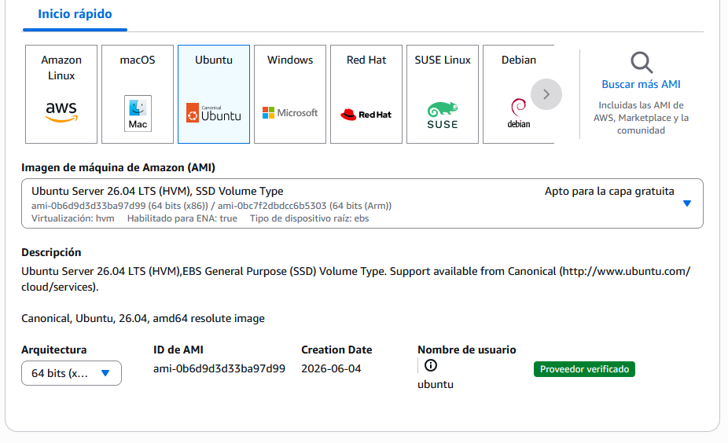
Captura 5 · Selección de una Amazon Machine Image basada en Ubuntu.
En este paso seleccionamos una AMI de Ubuntu. Una AMI es la plantilla que AWS utilizará como punto de partida para crear la nueva instancia EC2.
La imagen contiene el sistema operativo y la información necesaria para iniciar el servidor virtual.
Tipo de instancia
AWS06 · INSTANCE TYPE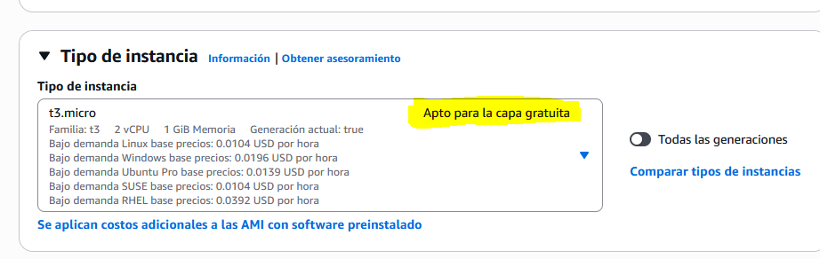
Captura 6 · Selección de un tipo de instancia permitido por la práctica.
El tipo de instancia determina los recursos de hardware virtual que tendrá nuestro EC2, como capacidad de procesamiento, memoria y otras características.
En esta práctica se selecciona una opción indicada como compatible con la capa gratuita (Free Tier), evitando utilizar una configuración superior a la requerida.
Selección del par de claves vockey
AWS07 · KEY PAIR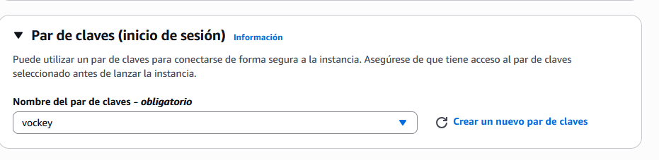
Captura 7 · Selección del par de claves vockey.
Se selecciona el par de claves vockey, que posteriormente permitirá autenticarnos cuando realicemos una conexión SSH con la instancia.
La clave privada se mantiene en nuestro equipo y debe protegerse, ya que forma parte del mecanismo de autenticación utilizado para acceder al servidor.
Grupo de seguridad y SSH
AWS08 · SECURITY GROUP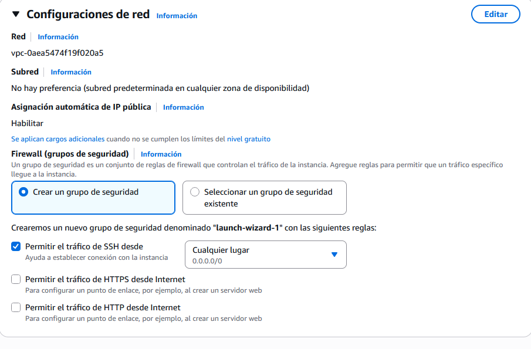
Captura 8 · Creación del grupo de seguridad permitiendo tráfico SSH.
Se crea un grupo de seguridad para controlar el tráfico de red permitido hacia la instancia EC2.
Para esta práctica se añade una regla de entrada que permite conexiones mediante SSH. SSH utiliza normalmente el protocolo TCP y el puerto 22.
Administración remota segura.
Protocolo de transporte utilizado.
Puerto habitual utilizado por SSH.
Configuración del almacenamiento
AWS09 · STORAGE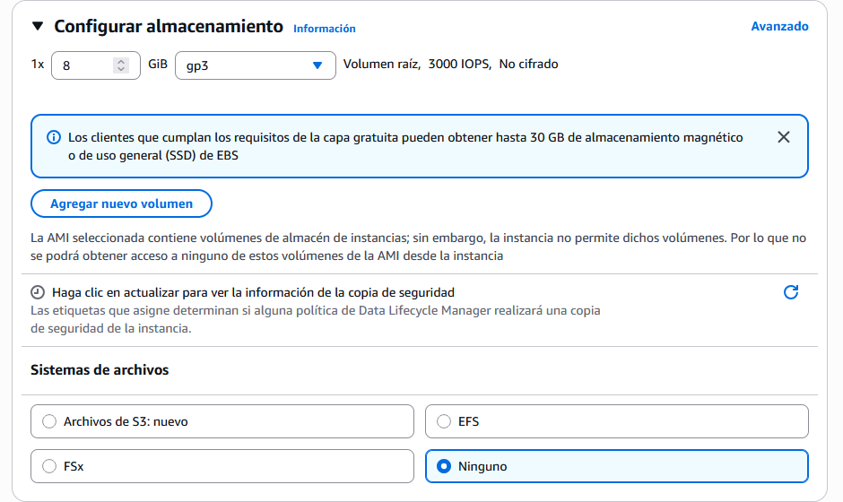
Captura 9 · Selección del almacenamiento asociado a la instancia.
En este apartado se configura el almacenamiento que utilizará la instancia EC2.
El volumen contiene el sistema operativo y los datos almacenados por el servidor. Para la práctica se utiliza la configuración indicada sin asignar recursos innecesarios.
Lanzamiento correcto de EC2
AWS10 · INSTANCE LAUNCHED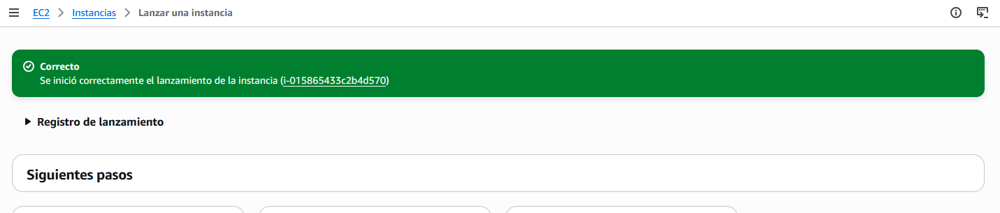
Captura 10 · Mensaje de éxito después de lanzar la instancia EC2.
AWS confirma que la solicitud de creación de la instancia se ha procesado correctamente.
A partir de este momento AWS comienza a aprovisionar los recursos necesarios para arrancar el servidor virtual utilizando la AMI y la configuración seleccionadas.
Datos de configuración de la instancia
AWS11 · INSTANCE DETAILS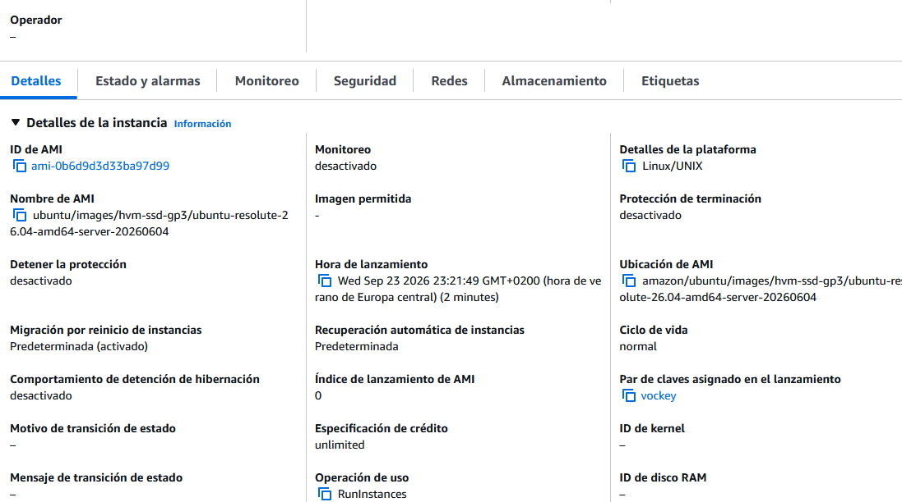
Captura 11 · Información y datos de configuración de la instancia EC2.
Desde el panel de EC2 podemos consultar la información de la instancia creada.
Entre los datos disponibles se encuentran el identificador de la instancia, estado, tipo de instancia, información de red, direcciones IP y otros parámetros utilizados para administrar el servidor.
Grupos de seguridad
AWS12 · SECURITY GROUP LIST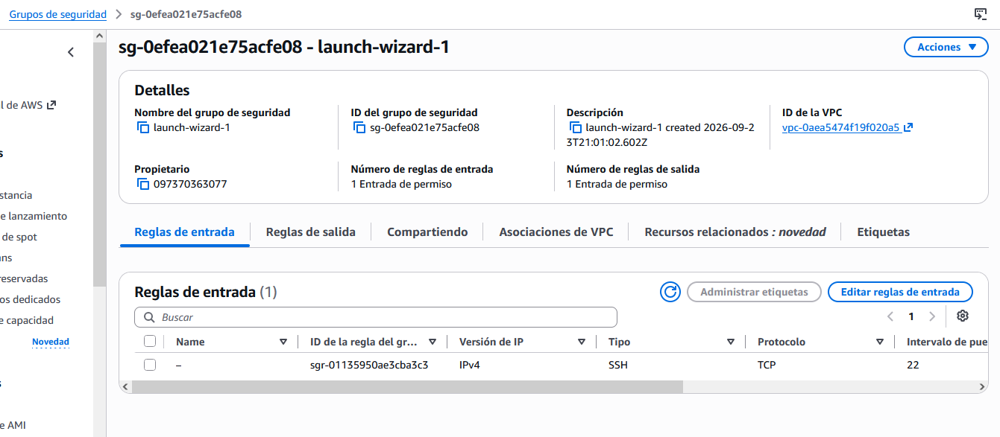
Captura 12 · Listado de grupos de seguridad creados al lanzar la instancia.
Se comprueba desde el panel de AWS el grupo de seguridad utilizado por la instancia.
Este grupo contiene las reglas que determinan qué tráfico puede alcanzar el servidor, incluida la regla SSH configurada anteriormente.
Conexión SSH e IP privada
AWS13 · SSH CONNECTION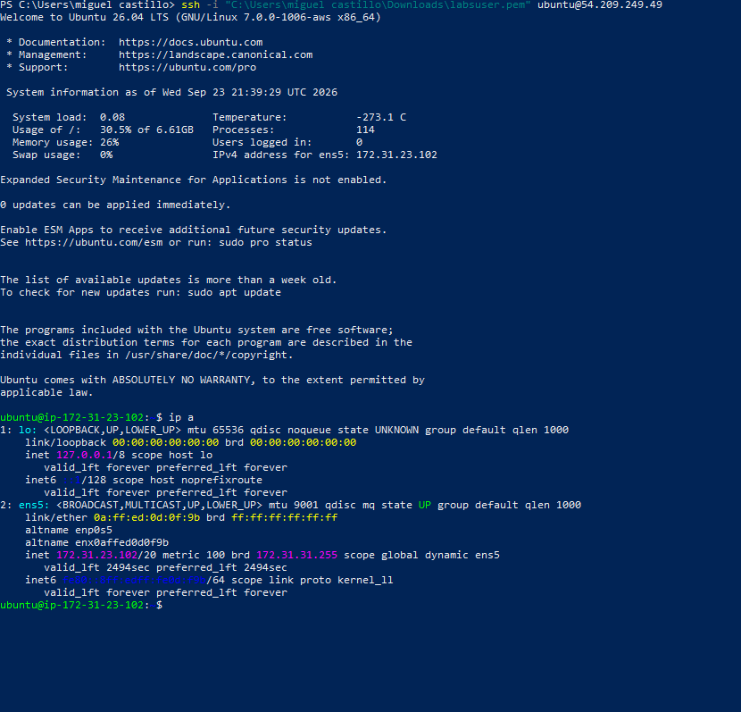
Captura 13 · Conexión mediante SSH utilizando el fichero .pem y comprobación de la IP privada.
Se establece una conexión remota con la instancia EC2 mediante SSH, utilizando el fichero de clave privada .pem correspondiente al par de claves configurado.
Una vez dentro del servidor se muestra su dirección IP privada. Esta dirección se utiliza para la comunicación interna de la instancia dentro de su red virtual.
IP privada → identifica la instancia dentro de su red privada en AWS.
Eliminación de la instancia
AWS14 · TERMINATE INSTANCE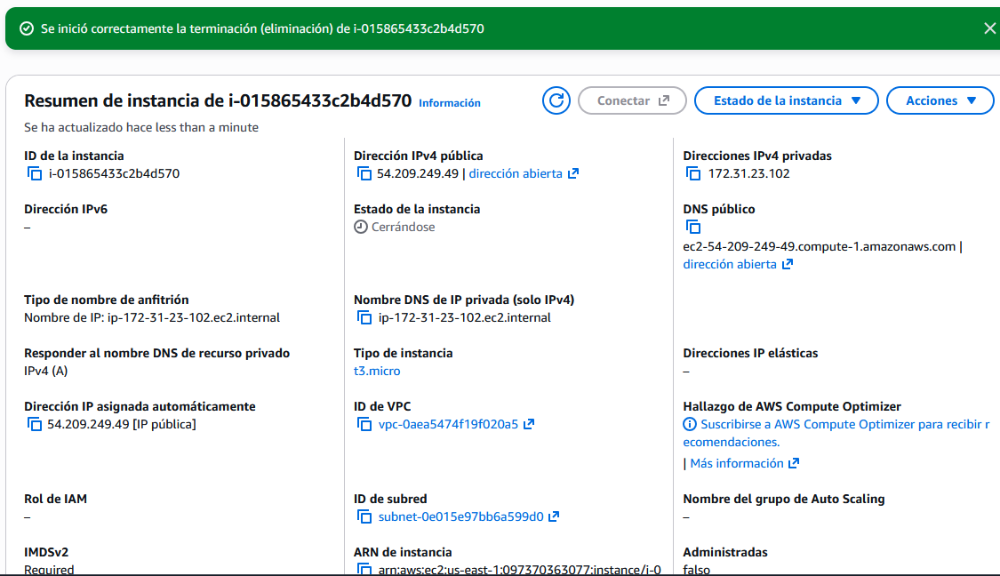
Captura 14 · Eliminación de la instancia EC2 creada desde el panel.
Una vez terminadas las comprobaciones se procede a eliminar la instancia creada durante esta fase.
La terminación de una instancia implica dejar de utilizar ese servidor EC2. Es importante controlar los recursos cloud que permanecen activos para evitar mantener infraestructura que ya no necesitamos.
3. Creación de EC2 mediante AWS CLI
En esta fase repetimos el despliegue de infraestructura, pero abandonamos la creación manual desde el panel y utilizamos un script ejecutado desde línea de comandos.
Listado inicial de instancias
AWS15 · EMPTY INSTANCE LIST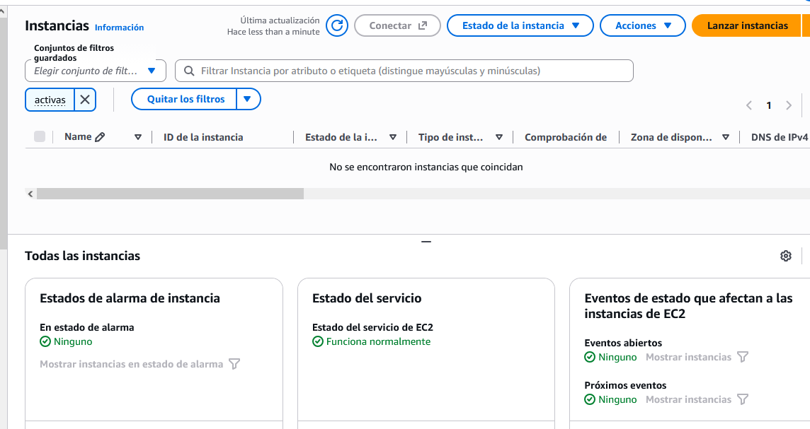
Captura 15 · Listado inicial de instancias antes del despliegue mediante AWS CLI.
Antes de ejecutar el nuevo despliegue se comprueba desde AWS Management Console el estado de las instancias.
De esta forma queda documentado el estado previo a la ejecución del script y podremos comprobar posteriormente que la nueva instancia ha sido creada mediante AWS CLI.
Creación del script .sh
AWS16 · EC2 DEPLOYMENT SCRIPT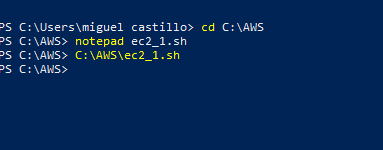
Captura 16 · Creación del archivo .sh utilizado para desplegar la instancia EC2.
Se crea un archivo de tipo .sh que contiene los comandos necesarios para solicitar a AWS la creación de una nueva instancia EC2.
Este procedimiento permite automatizar operaciones que anteriormente realizamos manualmente desde AWS Management Console.
AMI Debian y parámetros
AWS17 · --IMAGE-ID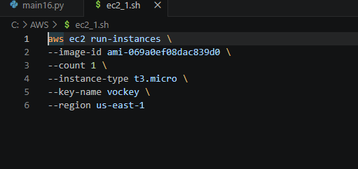
Captura 17 · Configuración del script utilizando el identificador de una AMI Debian.
Dentro del script se configura el parámetro --image-id con el identificador de la AMI de Debian que se utilizará como imagen base para la nueva instancia.
Este parámetro cumple la misma función conceptual que la selección de Ubuntu realizada anteriormente desde la interfaz gráfica: indicar a EC2 qué imagen debe utilizar para crear el servidor.
Selecciona la AMI utilizada por la instancia.
Sistema operativo solicitado para esta fase.
Creación del recurso mediante comandos.
Ejecución del fichero
AWS18 · SCRIPT EXECUTION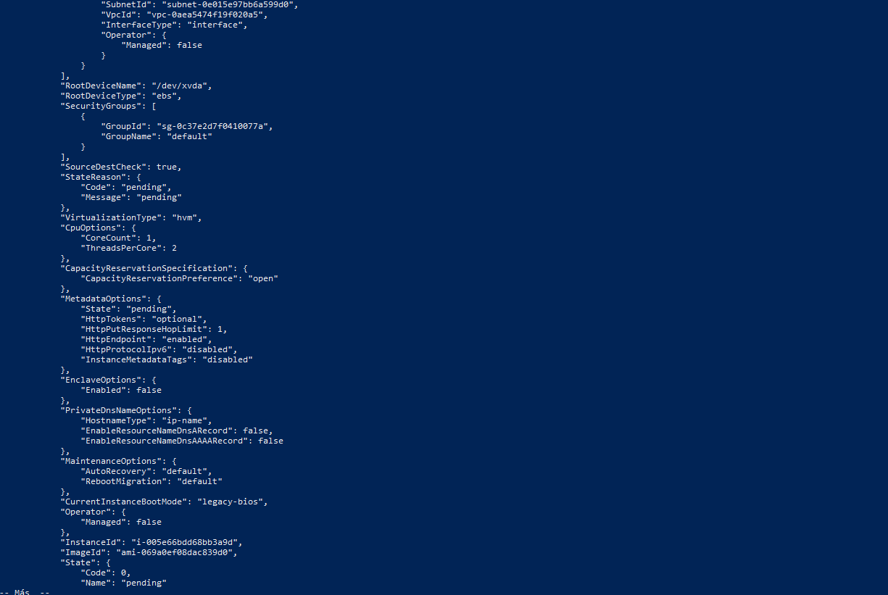
Captura 18 · Ejecución del fichero y resultado devuelto por AWS CLI.
Se ejecuta el archivo preparado anteriormente. Los comandos incluidos en el script son enviados a AWS mediante AWS CLI.
AWS procesa la solicitud y devuelve información relacionada con el recurso creado. Esto permite comprobar desde terminal que la operación se ha ejecutado.
Comprobación final en AWS
AWS19 · INSTANCE RUNNING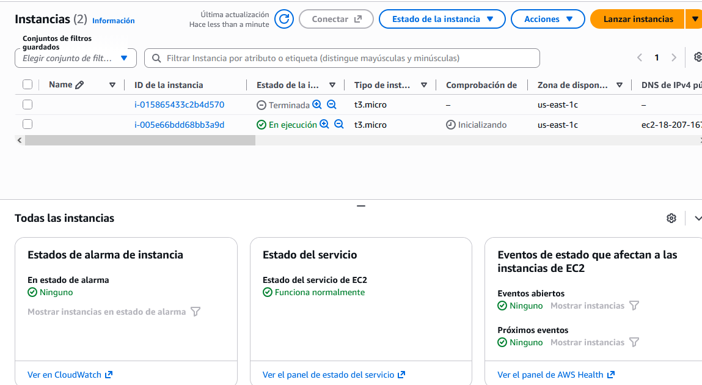
Captura 19 · Listado final de instancias después del despliegue mediante AWS CLI.
Regresamos al panel de administración de EC2 y comprobamos que aparece la nueva instancia creada desde la línea de comandos.
Esto demuestra que AWS Management Console y AWS CLI son dos interfaces diferentes para administrar los mismos recursos de nuestra infraestructura AWS.
CLOUD LAB COMPLETADO
Se ha preparado AWS CLI, verificado la identidad utilizada, creado una instancia EC2 desde AWS Management Console, configurado su acceso SSH, conectado al servidor y, finalmente, desplegado una nueva instancia desde línea de comandos utilizando AWS CLI.